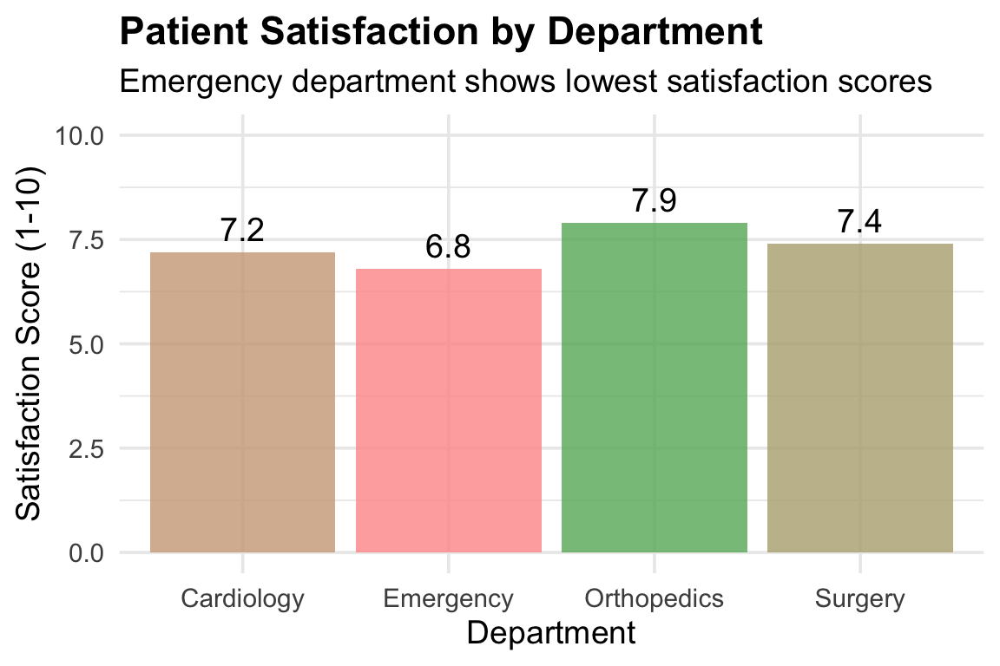
Basics of Data Visualization
Week 04
1 Introduction to Data Visualization
1.1 Why Visualization Matters
Let’s look at these two ways of presenting the same patient satisfaction data across different hospital departments:
| Department | Avg Satisfaction | Patients | Median Wait (min) |
|---|---|---|---|
| Cardiology | 7.2 | 52 | 45 |
| Emergency | 6.8 | 48 | 67 |
| Orthopedics | 7.9 | 51 | 38 |
| Surgery | 7.4 | 49 | 52 |
Which format helped you identify the problem department faster?
Most likely, the visualization! You probably spotted the shortest bar in less than a second. Both formats convey identical information, but visualization leverages our brain’s pre-attentive visual processing to make comparisons nearly instantaneous.
Healthcare managers make critical decisions daily that affect patient outcomes, operational efficiency, and financial performance. Data visualization transforms complex data into clear, actionable insights. Consider just a few examples:
- Hospital readmissions: Are patients discharged on Fridays more likely to return within 30 days? A bar chart can quickly reveal patterns that suggest when follow-up care may be falling short.
- Patient satisfaction: Which factors (e.g., wait times, communication, cleanliness) drive satisfaction most?
- Resource utilization: How does bed occupancy change by hour?
- Quality metrics: Are complication rates improving over time?
Today you’ll learn how to create visualizations that:
- Speed up understanding by revealing patterns instantly (no table-scanning required)
- Bridge expertise gaps so anyone (clinical or not, statistician or not) can grasp the message
- Drive action by making it obvious where attention is needed most
1.2 What Makes a Good Visualization?
Before we dive in, let’s establish what we’re aiming for. A good visualization should be (also see data visualization guide from the Office of HIV/AIDS (OHA)):
1. Truthful: Accurately represents the data without distortion
- e.g.,) Uses appropriate scales and chart types vs. truncating the y-axis


2. Functional: Serves a clear analytical purpose
- e.g.,) Right vs. w rong chart type for the data and question


3. Insightful: Reveals something not obvious from raw numbers
- e.g.,) Showing patterns, relationships, or anomalies hidden in summary statistics vs. relying only on summary statistics
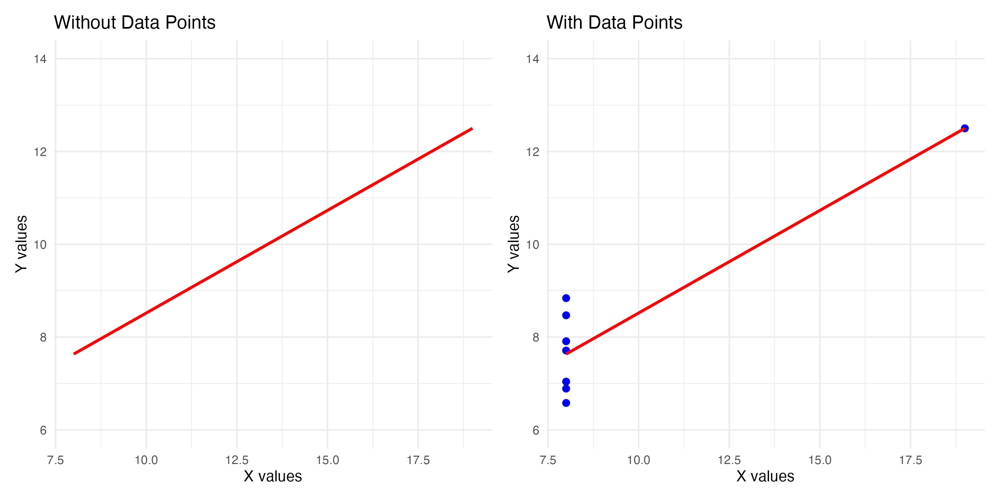
4. Clear: Easy to understand at a glance
- e.g.,) Direct, informative labels vs. missing, unreadable labels
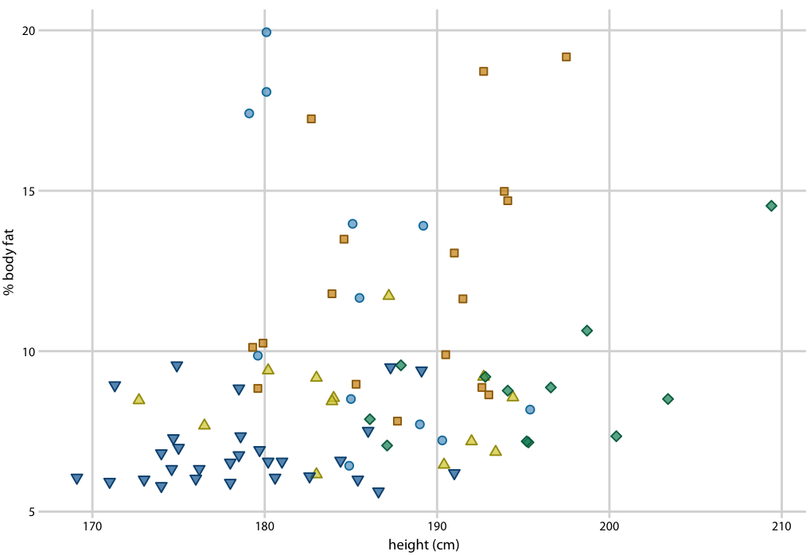
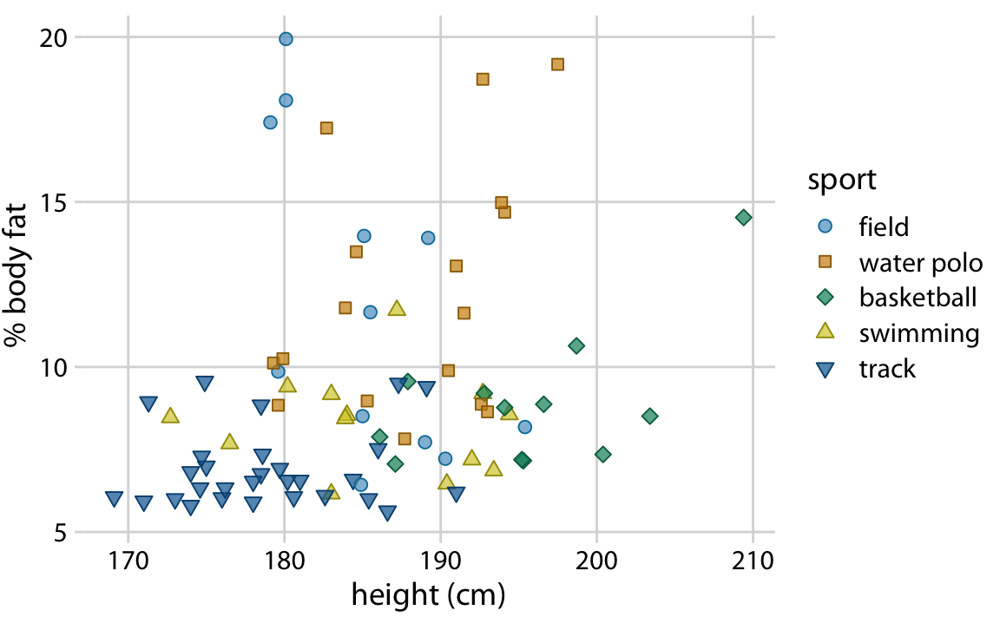
1.3 Overview: Choosing the Right Visualization
Before diving into R code, let’s understand when to use each chart type. The key is matching your question to the right visual format.
Let’s take a look at some widely used data visualization methods. (see more here)
1.3.1 1. Histogram
- Distribution of one continuous variable
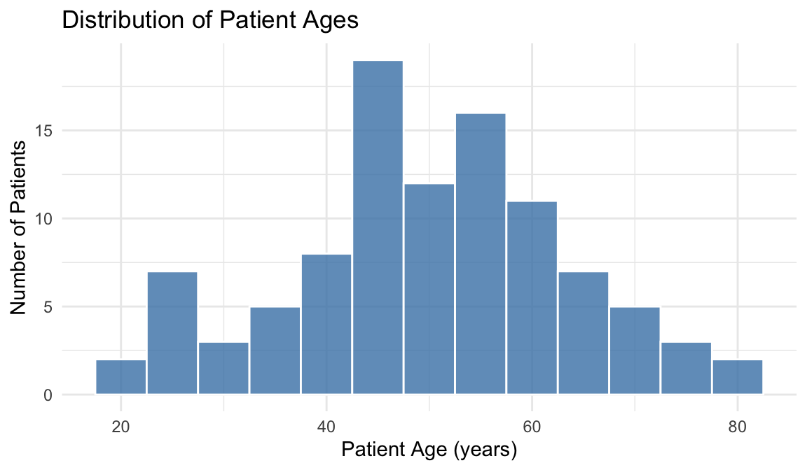
| When to use | What it shows | Example question |
|---|---|---|
| Understanding distribution of a single continuous variable | Shape (symmetric/skewed), center (typical value), spread, outliers | “What’s the typical patient wait time?” |
1.3.2 2. Bar Chart
- Compare counts or values across categories or measures
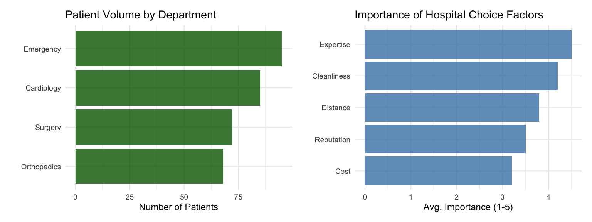
| When to use | What it shows | Example question |
|---|---|---|
| Comparing counts across categories | Which group is largest/smallest, relative differences | “Which department has the most patients?” |
| Comparing values across measures | Ranking or relative importance | “What factors matter most when choosing a hospital?” |
1.3.3 3. Box Plot
- Compare distributions, central tendency, spread, and outliers across groups
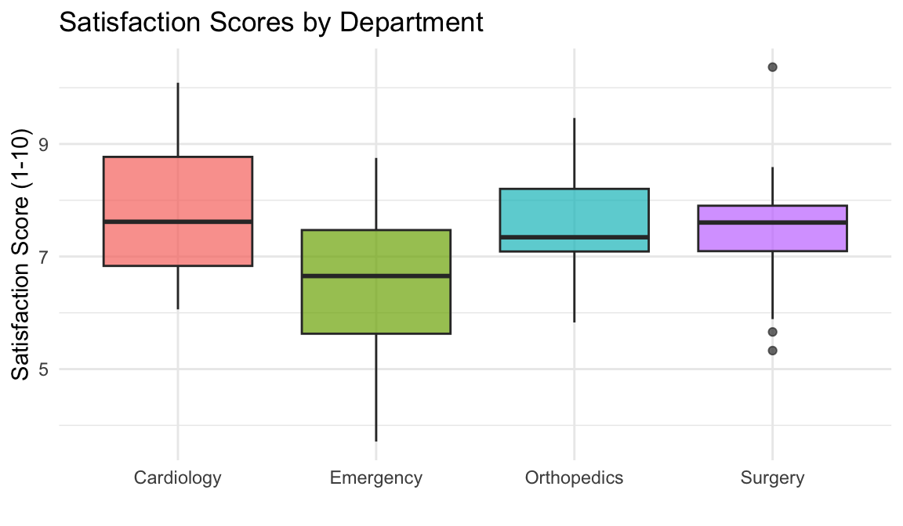
| When to use | What it shows | Example question |
|---|---|---|
| Comparing distributions of a continuous variable across groups | Median, spread (IQR), outliers for each group | “Do satisfaction scores differ by department?” |
1.3.4 4. Scatterplot
- Relationship between two continuous variables
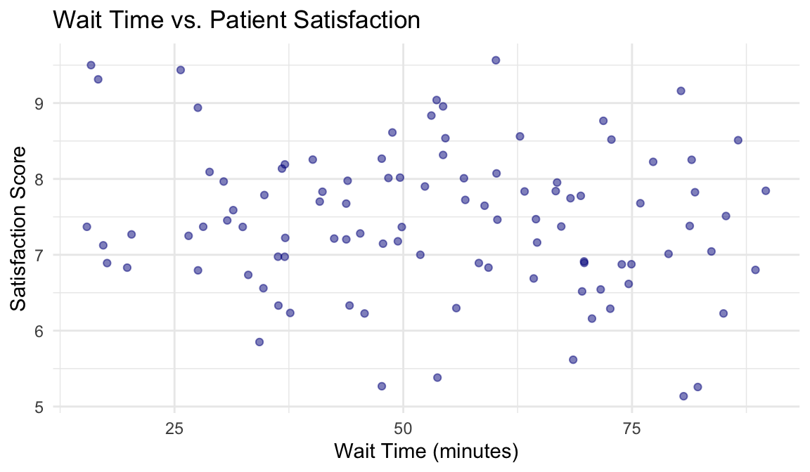
| When to use | What it shows | Example question |
|---|---|---|
| Exploring relationship between two continuous variables | Correlation direction (positive/negative), strength, clusters, outliers | “Does longer wait time relate to lower satisfaction?” |
1.3.5 5. Line Chart
Track trends over time
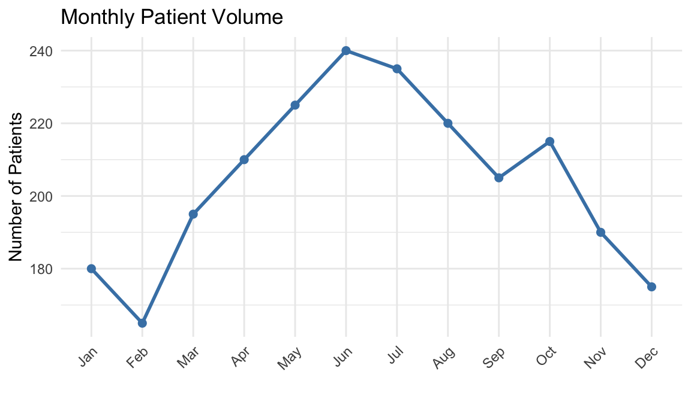
| When to use | What it shows | Example question |
|---|---|---|
| Tracking how a metric changes over time | Trends (up/down), seasonal patterns, sudden changes | “How has patient volume changed over the year?” |
1.3.6 6. Faceted Plot
- Compare patterns across groups
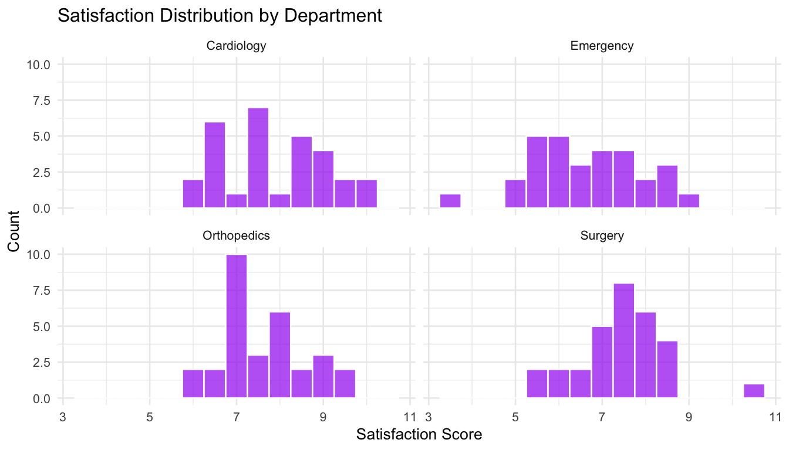
| When to use | What it shows | Example question |
|---|---|---|
| Comparing the same visualization across different groups | Whether patterns differ by category, subgroup comparisons | “Does satisfaction distribution differ by department?” |
1.3.7 Quick Reference Table
| Your Question | Best Visualization |
|---|---|
| “What’s the distribution of X?” | Histogram |
| “How many in each category?” | Bar Chart |
| “How do groups compare?” | Box Plot |
| “Is there a relationship between X and Y?” | Scatterplot |
| “How does X change over time?” | Line Chart |
| “Do patterns differ by group?” | Faceted Plot |
By the end of this session, you’ll know when and how to create each one.
2 Learning Objectives
By the end of this session, you will be able to:
- Apply the grammar of graphics approach to build layered visualizations using
ggplot2 - Select appropriate visualization types based on your data structure and analytical questions
- Create and customize professional visualizations including histograms, bar charts, box plots, scatterplots, and line charts for management decision-making
3 The Grammar of Graphics
3.1 Understanding ggplot2
The ggplot2 package in R implements a “grammar of graphics” approach: a systematic way to build visualizations by combining independent components.
Think of it like building a chart for a presentation: You start with data, decide what goes on each axis, and then pick a chart type. The three essential building blocks are:
- Data: What dataset are you visualizing?
- Aesthetics (aes): What variables map to visual properties (x-axis, y-axis, color, size)?
- Geometries (geom): What type of visualization (points, bars, lines)?
Every ggplot follows this basic template:
# Basic structure: data + aesthetics + geometry
ggplot(data = <DATA>, mapping = aes(<MAPPINGS>)) +
<GEOM_FUNCTION>()Here’s an actual example using R’s built-in ToothGrowth dataset (a study on vitamin C’s effect on tooth growth):
# Simple example: tooth length by supplement type
ggplot(data = ToothGrowth, mapping = aes(x = supp, y = len)) +
geom_boxplot()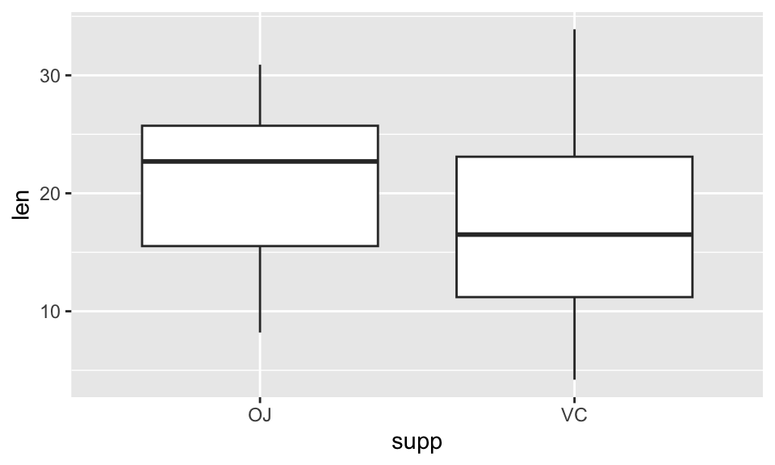
That’s it! With just one line of code, we created a box plot comparing tooth length between two supplement types (OJ = Orange Juice, VC = Vitamin C). Now we can add more layers to improve it:
# Same chart with labels and styling added as layers
ggplot(data = ToothGrowth, mapping = aes(x = supp, y = len)) +
geom_boxplot(fill = "steelblue", alpha = 0.7) +
labs(title = "Tooth Length by Supplement Type", # Adjusting plot labels
x = "Supplement",
y = "Tooth Length") +
theme_minimal() # applying a theme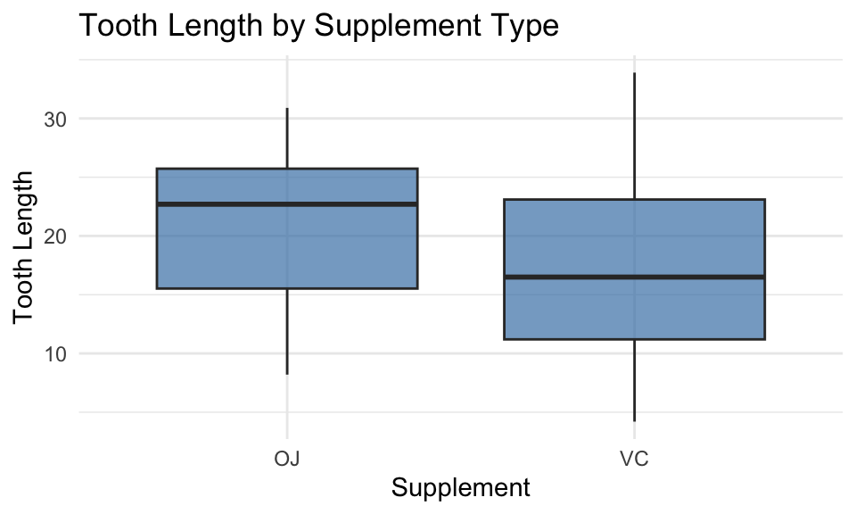
Notice how we just kept adding layers with +. This is the power of ggplot2! (start simple, then refine)
3.2 Commonly Used ggplot2 Components
Beyond the basic template, you’ll frequently use these additional components:
3.2.1 Geometric Objects (geom_*)
The visual representation of your data:
geom_point(): Scatterplots (individual data points)geom_line(): Line plots (connecting points, often for time series)geom_bar(): Bar charts (heights represent counts or values)geom_histogram(): Histograms (distribution of continuous data)geom_boxplot(): Box plots (distribution summary with quartiles)geom_smooth(): Trend lines (fitted curves or lines through data)
3.2.2 Labels and Titles (labs)
Add descriptive text to your plot:
labs(
title = "Main title", # Bold text at the top of the plot
subtitle = "Additional context", # Smaller text below the title
x = "X-axis label", # Label for horizontal axis
y = "Y-axis label", # Label for vertical axis
color = "Legend title", # Title for color legend (if using color aesthetic)
caption = "Data source or notes" # Small text at bottom-right corner
)3.2.3 Scales (scale_*)
Control how data values map to visual properties:
scale_x_continuous(),scale_y_continuous(): Adjust axis breaks, limits, transformationsscale_color_brewer(),scale_fill_brewer(): Use professional color palettesscale_color_manual(),scale_fill_manual(): Specify custom colors
3.2.4 Facets (facet_*)
Create small multiples (separate panels for subgroups):
facet_wrap(~ variable): Wrap panels in a gridfacet_grid(row_var ~ col_var): Arrange panels by two variables
3.2.5 Themes (theme_*)
Control the overall appearance
theme_minimal(): Clean, minimal design (recommended for presentations)theme_classic(): Traditional look with axis linestheme_bw(): Black and white with grid- See other themes here.
4 Example Dataset: Patient Satisfaction Survey
Before creating a dataset for data visualization activities, let’s load required packages.
library(ggplot2)
library(dplyr)
library(patchwork)
set.seed(2026)For this lecture, we’ll use a simulated dataset from a patient satisfaction survey conducted across multiple hospital departments.
# Simulate patient satisfaction data
patient_data <- read.csv("https://raw.githubusercontent.com/mba642-spring-26/mba642-spring-26.github.io/refs/heads/main/datasets/week04_demonstration_data.csv")
# Display first 10 rows to see the data structure
head(patient_data, 10) X patient_id age department satisfaction_score wait_time_minutes
1 1 1 63 Emergency 7.2 67
2 2 2 39 Emergency 7.2 40
3 3 3 57 Emergency 6.0 28
4 4 4 54 Orthopedics 9.2 73
5 5 5 45 Surgery 6.0 32
6 6 6 18 Orthopedics 6.1 29
7 7 7 44 Emergency 5.9 36
8 8 8 40 Emergency 10.0 22
9 9 9 57 Surgery 8.5 34
10 10 10 48 Surgery 8.6 58
length_of_stay_days
1 9
2 2
3 5
4 4
5 6
6 4
7 5
8 6
9 1
10 3Dataset Variables:
| Variable | Description | Type | Possible Values |
|---|---|---|---|
patient_id |
Unique patient identifier | Numeric | 1 to 200 |
age |
Patient age in years | Numeric (continuous) | 18 to 95 years |
department |
Hospital department | Categorical | “Cardiology”, “Orthopedics”, “Emergency”, “Surgery” |
satisfaction_score |
Overall satisfaction rating | Numeric (continuous) | 1.0 to 10.0 (in 0.1 increments) |
wait_time_minutes |
Wait time before seeing provider | Numeric (continuous) | Varies, typically 10-200 minutes |
length_of_stay_days |
Hospital length of stay | Numeric (discrete) | Varies, typically 1-10 days |
5 Visualizing Single Variables
5.1 Histograms for Continuous Variables
Purpose:
Histograms reveal the distribution pattern of continuous data, showing where values cluster, whether the distribution is symmetric or skewed, and identifying potential outliers.
They help answer questions like “What’s the typical age range of our patients?” or “Are most wait times reasonable, or do we have a problem (outliers)?”
When to use:
- Examining the distribution of age, wait times, length of stay, or any continuous measure.
Let’s draw a histogram for the patients’ age distribution using ggplot2 package.
# Basic histogram: minimal code to see the distribution
ggplot(data = patient_data, mapping = aes(x = age)) + # Specify data and map age to x-axis
geom_histogram() # Add histogram geometry (bars showing frequency)
Improving the histogram:
We can edit and change the histogram by changing and adding additional layers and conditions.
# Improved histogram with better styling and labels
ggplot(patient_data, aes(x = age)) + # Specify data and aesthetic mapping
geom_histogram(binwidth = 5, # Set bin width to 5 years per bar
fill = "steelblue", # Fill color for bars
color = "white") + # Border color (creates separation between bars)
labs(title = "Distribution of Patient Ages", # Add descriptive title
x = "Age (years)", # Label x-axis with units
y = "Number of Patients") + # Label y-axis
theme_minimal() # Apply clean, minimal theme (removes gray background)
Components used:
geom_histogram(): Creates histogram by dividing continuous variable into binsbinwidth = 5: Controls bin size (each bar = 5-year age range)fillandcolor: Control bar appearance (interior and border colors)labs(): Adds title and axis labels for claritytheme_minimal(): Applies professional, clean appearance
ImportantWhy Binwidth Matters
The same data can tell different stories depending on bin width:
- Too narrow (e.g., binwidth = 1): Creates noisy, jagged patterns that obscure the overall shape
- Too wide (e.g., binwidth = 20): Hides important features like bimodality or skewness
- Just right: Reveals the true distribution pattern without excessive noise
How to interpret a histogram:
When examining a histogram, describe these features:
- Shape: Is it symmetric, right-skewed (tail extends right), or left-skewed?
- Center: Where do most values cluster? (approximate the median visually)
- Spread: How wide is the distribution? Are values tightly clustered or spread out?
- Outliers: Are there isolated bars far from the main distribution?
- Modality: Is there one peak (unimodal), two peaks (bimodal), or multiple peaks?
Example interpretation: “The patient age distribution is roughly symmetric and unimodal, centered around 55 years. Most patients fall between 40-70 years old, with few patients under 30 or over 80. This suggests our services primarily serve middle-aged to older adults.”
✏️ Practice: Histogram
Load the dataset using the code below for the practice activities:
ed_data <- read.csv("https://raw.githubusercontent.com/mba642-spring-26/mba642-spring-26.github.io/refs/heads/main/datasets/week04_practice_data.csv")
# Convert month to ordered factor for proper ordering
ed_data$month <- factor(ed_data$month,
levels = c("January", "February", "March", "April",
"May", "June", "July", "August",
"September", "October", "November", "December"))
# Check the data
head(ed_data)
NoteYour Turn! (5 minutes)
Create a histogram showing the distribution of wait times in the ED data.
# Fill in the blanks (replace ___ with appropriate values)
ggplot(data = ed_data, mapping = aes(x = ___)) +
geom_histogram(binwidth = ___, fill = "steelblue", color = "white") +
labs(
title = "Distribution of ED Patient Wait Times",
x = "___",
y = "___"
) +
theme_minimal()Question: What is the approximate center of the distribution? Is it symmetric or skewed?
5.2 Bar Charts for Categorical Variables
Purpose:
Bar charts compare frequencies or counts across categories, making it easy to see which groups are larger or smaller.
They can also display summary statistics (like averages) across different measures or variables.
They answer questions like “Which department serves the most patients?” or “What factors are most important when choosing a hospital?”
When to use:
- Showing patient counts by department, admission type, insurance status, or any categorical grouping.
- Comparing average values or ratings across different measures or categories.
Let’s visualize how many patients each hospital department has in the dataset using a bar graph.
# Bar chart showing patient distribution across departments
ggplot(patient_data, aes(x = department)) + # Map department to x-axis
geom_bar(fill = "darkgreen", # Fill color for all bars
width = 0.5, # width of the bars
alpha = 0.7) + # Transparency level (0.7 = 70% opaque)
labs(title = "Patient Volume by Department", # Descriptive title
x = "Department", # X-axis label
y = "Number of Patients") + # Y-axis label
theme_minimal() # Clean theme
Components used:
geom_bar(): Automatically counts observations in each category and creates barsalpha = 0.7: Controls transparency (0 = fully transparent, 1 = fully opaque)width = 0.5: Controls bar width (close to 0: narrower, close to 1: wider)labs(): Adds clear labels and titletheme_minimal(): Professional appearance
✏️ Practice: Bar Chart
NoteYour Turn! (5 minutes)
Create a bar chart showing the number of ED visits by month.
# Fill in the blanks
ggplot(data = ed_data, mapping = aes(x = ___)) +
geom_bar(fill = "darkgreen", alpha = 0.7) +
labs(
title = "Monthly ED Patient Volume",
x = "___",
y = "Number of Visits"
) +
theme_minimal() +
theme(axis.text.x = element_text(angle = 45, hjust = 1))Question: Are visits evenly distributed across months, or are there patterns?
5.3 Box Plots for Distribution Summary
Purpose:
Box plots provide a compact five-number summary of data distribution (minimum, 25th percentile, median, 75th percentile, maximum), making them ideal for identifying the typical range of values, spread, and outliers.
They’re particularly useful for comparing distributions across multiple groups at a glance.
When to use:
- Comparing distributions across groups, identifying outliers in metrics, or summarizing spread of continuous variables.
Let’s visualize patients’ satisfaction score using a box plot.
# Single box plot showing distribution of satisfaction scores
ggplot(patient_data, aes(x = "", # Empty x aesthetic for single box plot
y = satisfaction_score)) + # Map satisfaction to y-axis
geom_boxplot(fill = "coral", # Fill color for box
width = 0.2,
alpha = 0.6) + # Transparency level
labs(title = "Distribution of Patient Satisfaction Scores", # Title
x = "", # No x-axis label needed for single box
y = "Satisfaction Score (1-10)") + # Y-axis label with scale
theme_minimal() # Clean theme
Interpreting box plots:
- Box: Contains the middle 50% of data (25th to 75th percentile—this is called the interquartile range or IQR)
- Line in box: Median value (middle point where 50% of data falls above and below)
- Whiskers: Extend to 1.5 × IQR from the box edges
- Points beyond whiskers: Potential outliers (unusually high or low values)
TipReading Box Plots: A Quick Guide
When examining a box plot, look for:
- Median position within the box: If the median line is not centered, the distribution is skewed
- Box height (IQR): Taller boxes indicate more variability in the middle 50%
- Whisker lengths: Asymmetric whiskers suggest skewness
- Outliers: Many outliers may indicate data quality issues or distinct subpopulations
Example interpretation: “The median satisfaction score is 7.9, with the middle 50% of patients rating between 6.0 and 8.9. The relatively short box suggests consistent satisfaction levels.”
Components used:
geom_boxplot(): Creates box-and-whisker plot showing distribution summaryaes(x = "", y = variable): Empty x for single box; y specifies the variable to summarizefillandalpha: Control appearancelabs(): Adds descriptive labels
✏️ Practice: Box Plot
NoteYour Turn! (5 minutes)
Create a box plot showing the distribution of wait times in the ED.
# Fill in the blanks
ggplot(data = ed_data, mapping = aes(x = "", y = ___)) +
geom_boxplot(fill = "lightblue") +
labs(
title = "Distribution of ED Wait Times",
x = "",
y = "Wait Time (minutes)"
) +
theme_minimal()Question: What is the approximate median wait time? Are there any outliers?
6 Visualizing Relationships
So far, we’ve looked at how to visualize single variables (e.g., examining distributions and counts). But many important business questions involve relationships: Does one variable affect another? Do they move together or in opposite directions?
In this section, we’ll learn how to visualize relationships between variables to uncover patterns and inform decision-making.
6.1 Scatterplots for Two Continuous Variables
Purpose:
Scatterplots reveal relationships between two continuous variables: whether they move together (positive correlation), move in opposite directions (negative correlation), or show no clear pattern.
Each point represents one observation, making it easy to spot outliers and assess the strength of relationships.
When to use:
- Examining whether wait time is related to patient satisfaction, whether age relates to length of stay, or exploring any relationship between two continuous measures.
Let’s show the relationship between wait time and patient satisfaction using a scatterplot.
# Basic scatterplot showing relationship between two variables
ggplot(patient_data, aes(x = wait_time_minutes, # Map wait time to x-axis
y = satisfaction_score)) + # Map satisfaction to y-axis
geom_point(alpha = 0.5, # Transparency (helps see overlapping points)
color = "darkblue") + # Color of all points
labs(title = "Relationship Between Wait Time and Satisfaction", # Descriptive title
x = "Wait Time (minutes)", # X-axis label with units
y = "Satisfaction Score (1-10)") + # Y-axis label with scale
theme_minimal() # Clean theme
While individual points show the raw data, it can be helpful to add a trend line to make the overall pattern clearer. This is especially useful when you have many overlapping points or want to communicate the general direction of the relationship to stakeholders.
Adding a trend line:
# Scatterplot with linear trend line showing direction of relationship
ggplot(patient_data, aes(x = wait_time_minutes, y = satisfaction_score)) +
geom_point(alpha = 0.5, color = "darkblue") + # Add scatter points
geom_smooth(method = "lm", # Add linear regression line ("lm" = linear model)
se = TRUE, # Show confidence interval (shaded region around line)
color = "red") + # Color of trend line
labs(title = "Wait Time and Satisfaction with Linear Trend",
x = "Wait Time (minutes)",
y = "Satisfaction Score (1-10)") +
theme_minimal()
Components used:
geom_point(): Plots individual data points (each patient is one dot)geom_smooth(method = "lm"): Adds linear regression trend line to show overall patternse = TRUE: Displays confidence interval (shaded area showing uncertainty in the trend)alpha = 0.5: Makes points semi-transparent so overlapping points are visible- Multiple layers: Points + trend line are added as separate layers using
+
How to describe a scatterplot:
When presenting scatterplot findings, describe:
- Direction: Positive (upward), negative (downward), or no clear pattern
- Strength: Strong (points cluster tightly around trend), moderate, or weak (scattered)
- Form: Linear (straight line fits well) or nonlinear (curved pattern)
- Outliers: Any points far from the general pattern
Example interpretation: “Wait time and patient satisfaction show a very slight negative relationship in this dataset (as wait time increases, satisfaction scores decrease slightly).”
✏️ Practice: Scatterplot
NoteYour Turn! (5 minutes)
Create a scatterplot showing the relationship between ED census (number of patients) and wait times. Add a trend line.
# Fill in the blanks
ggplot(data = ed_data, mapping = aes(x = ___, y = ___)) +
geom_point(alpha = 0.5, color = "darkblue") +
geom_smooth(method = "lm", se = TRUE, color = "red") +
labs(
title = "Relationship Between ED Census and Wait Times",
x = "___",
y = "___"
) +
theme_minimal()Question: Is there a positive or negative relationship? What does this mean for ED operations?
6.2 Line Charts for Time Series Data
Purpose:
Line charts reveal trends over time, showing how a metric rises, falls, or cycles. They’re essential for tracking performance, identifying seasonal patterns, and spotting when something changed.
The connected points emphasize continuity and direction, making it easy to see “are we improving?” at a glance.
When to use:
- Tracking monthly readmission rates, weekly patient volumes, daily ED wait times, or any metric that changes over time.
Basic line chart:
Let’s create some sample time series data and visualize patient volume trends over 12 months:
# Create monthly patient volume data
monthly_data <- data.frame(
month = factor(month.abb, levels = month.abb), # Jan-Dec in order
patient_volume = c(180, 165, 195, 210, 225, 240,
235, 220, 205, 215, 190, 175)
)
head(monthly_data) month patient_volume
1 Jan 180
2 Feb 165
3 Mar 195
4 Apr 210
5 May 225
6 Jun 240# Basic line chart showing patient volume over time
ggplot(monthly_data, aes(x = month, y = patient_volume, group = 1)) + # group = 1 connects all points
geom_line(color = "steelblue", linewidth = 1) + # Draw the line
geom_point(color = "steelblue", size = 2) + # Add points at each month
labs(title = "Monthly Patient Volume",
x = "Month",
y = "Number of Patients") +
theme_minimal()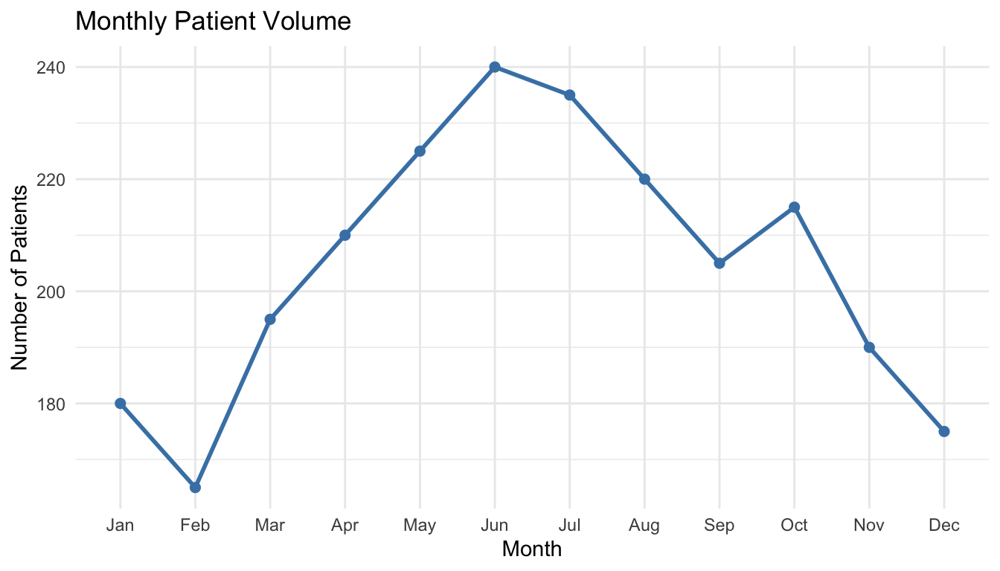
Components used:
geom_line(): Connects points in order (requiresgroupaesthetic when x is categorical)geom_point(): Adds dots at each data point for claritygroup = 1: Tells ggplot to connect all points as one line (needed when x-axis is categorical)linewidth: Controls line thickness
How to interpret a line chart:
When presenting line chart findings, describe:
- Overall trend: Is the metric increasing, decreasing, or stable over the period?
- Patterns: Are there seasonal cycles or regular fluctuations?
- Anomalies: Any sudden spikes or drops that warrant investigation?
Example interpretation: “Patient volume shows a clear seasonal pattern, peaking in summer months (June-July) at 235-240 patients and dropping in winter (December-February) to 165-180. This suggests we should plan for higher staffing in summer and consider outreach programs in winter.”
✏️ Practice: Line Chart
NoteYour Turn! (5 minutes)
Create a line chart showing monthly trends using the ED data. The ED data includes a month variable you can use to aggregate and visualize patterns.
# First, summarize monthly data
monthly_summary <- ed_data %>%
group_by(month) %>%
summarize(avg_wait = mean(wait_time_minutes))
# Then create the line chart
ggplot(data = monthly_summary, mapping = aes(x = ___, y = ___, group = 1)) +
geom_line(color = "steelblue", linewidth = 1) +
geom_point(color = "steelblue", size = 2) +
labs(
title = "Monthly Average ED Wait Times",
x = "___",
y = "___"
) +
theme_minimal() +
theme(axis.text.x = element_text(angle = 45, hjust = 1))Question: Do you see any seasonal patterns in wait times?
7 Grouped Comparisons
7.1 Comparing Groups with Box Plots
Purpose:
Grouped box plots let you compare distributions across categories side-by-side, revealing whether different groups (e.g., departments) have similar or different patterns.
This helps answer questions like “Do certain departments consistently have higher satisfaction?” or “Which group shows more variability?”
When to use:
- Comparing continuous outcomes across different groups or categories.
# Box plots comparing satisfaction across departments
ggplot(patient_data, aes(x = department, # Categories on x-axis
y = satisfaction_score, # Continuous variable on y-axis
fill = department)) + # Color each box by department
geom_boxplot(alpha = 0.7, # Create box plots with transparency
width = 0.3) + # Width of the boxes
labs(title = "Patient Satisfaction by Department",
x = "Department",
y = "Satisfaction Score (1-10)") +
theme_minimal() +
theme(legend.position = "none") # Remove legend (redundant with x-axis labels)
Components used:
aes(fill = department): Colors boxes by group automaticallytheme(legend.position = "none"): Removes redundant legend since x-axis already shows departments
NoteManagement Decision Point
Looking at grouped box plots, a healthcare manager should ask:
- Which departments need attention? Look for lower medians or more outliers
- Is variability a problem? Tall boxes suggest inconsistent patient experience
- What’s driving the patterns? Generate hypotheses for further investigation
Example action items from this visualization:
- If Emergency shows lower and more variable satisfaction, investigate staffing levels during peak hours
- If one department shows many low outliers, review those specific patient cases
- If all departments are similar, focus improvement efforts elsewhere
✏️ Practice: Grouped Box Plot
NoteYour Turn!
Create grouped box plots to compare wait times across different shifts (Day, Evening, Night).
# Fill in the blanks
ggplot(data = ed_data, mapping = aes(x = ___, y = ___, fill = ___)) +
geom_boxplot(alpha = 0.7) +
labs(
title = "ED Wait Times by Shift",
x = "Shift",
y = "Wait Time (minutes)"
) +
theme_minimal() +
theme(legend.position = "none")Question: Which shift tends to have the highest median wait time? Is the variability similar across shifts?
7.2 Bar Charts Showing Averages by Group
Purpose:
While bar charts can show counts (as we saw earlier), they’re also excellent for comparing average values across groups.
This is particularly useful for comparing mean satisfaction scores, average wait times, or other metrics across departments or categories.
When to use:
- Comparing average (mean) values across different groups (e.g., “What’s the average satisfaction score for each department?”)
Let’s draw a bar graph that shows the average satisfaction score across departments. We can let ggplot calculate the mean for us automatically:
# Bar chart showing average satisfaction by department
ggplot(patient_data, aes(x = department, # Department on x-axis
y = satisfaction_score, # Raw satisfaction scores on y-axis
fill = department)) + # Color bars by department
geom_bar(stat = "summary",
fun = "mean",
alpha = 0.8) + # Calculate and plot the mean
labs(title = "Average Patient Satisfaction by Department",
x = "Department",
y = "Average Satisfaction Score (1-10)") +
theme_minimal() +
theme(legend.position = "none") + # Remove redundant legend
ylim(0, 10) # Set y-axis limits to match satisfaction scale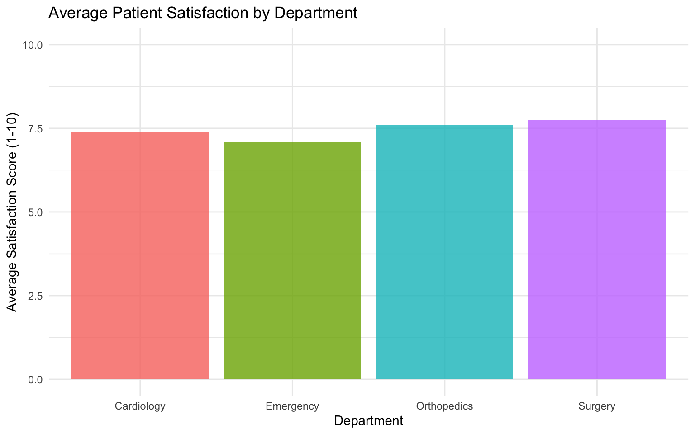
Components used:
geom_bar(stat = "summary", fun = "mean"): Calculates the mean of the y-axis variable for each x-axis group and plots it as a bar.ylim(): Sets y-axis limits (important for bar charts to provide proper context).
When to use bar charts for means vs. box plots:
- Bar chart of means: Shows the average value clearly, good for presentations
- Box plot: Shows full distribution (median, quartiles, outliers), better for data exploration
Both are useful, so choose based on your audience and message!
✏️ Practice: Bar Chart of Means
NoteYour Turn!
Create a bar chart showing the average wait time for each acuity level.
# Fill in the blanks
ggplot(data = ed_data, mapping = aes(x = factor(___), y = ___, fill = factor(___))) +
geom_bar(stat = "summary", fun = "___", alpha = 0.8) +
labs(
title = "Average ED Wait Times by Acuity",
x = "Acuity Level",
y = "Average Wait Time (minutes)"
) +
theme_minimal() +
theme(legend.position = "none")Question: Does the average wait time increase or decrease as acuity level goes up (1 to 5)? Note: Acuity 1 is most critical (should be fastest), Acuity 5 is least critical.
7.3 Grouped Scatterplots
Purpose:
Adding color or shape by group in scatterplots reveals whether relationships differ across subgroups.
For example, does wait time affect satisfaction differently across different departments?
Let’s check the relationship between wait time and satisfaction across different departments.
# Scatterplot with separate colors and trend lines for each department
ggplot(patient_data, aes(x = wait_time_minutes,
y = satisfaction_score,
color = department)) + # Color points and lines by department
geom_point(alpha = 0.6, # Add semi-transparent points
size = 2) + # Increase point size for visibility
geom_smooth(method = "lm", # Add separate trend line for each department
se = FALSE) + # Don't show confidence intervals (keeps plot cleaner)
labs(title = "Wait Time and Satisfaction by Department",
x = "Wait Time (minutes)",
y = "Satisfaction Score (1-10)",
color = "Department") + # Label for color legend
theme_minimal()
Components used:
aes(color = department): Assigns different colors to each department (applied to both points and lines)geom_smooth()with grouped color: Creates separate trend line for each groupse = FALSE: Hides confidence intervals to reduce visual cluttersize = 2: Makes points larger for easier viewing
Interpretation:
- Orthopedics: Shows a slight negative relationship, meaning satisfaction decreases as wait times increase.
- Surgery & Cardiology: Show almost flat lines, suggesting wait time has little impact on satisfaction in these departments.
- Emergency: Shows a slight, unexpected positive trend, which might indicate other factors at play (e.g., higher acuity patients might be more grateful despite waits, or a data anomaly).
This variability suggests that a “one-size-fits-all” approach to reducing wait times might not yield the same satisfaction improvements across all departments.
✏️ Practice: Grouped Scatterplot
NoteYour Turn!
Create a scatterplot showing the relationship between wait time and length of stay, with points colored by shift. Add a linear trend line (without confidence intervals) to see if the relationship differs by shift.
# Fill in the blanks
ggplot(data = ed_data, mapping = aes(x = ___, y = ___, color = ___)) +
geom_point(alpha = 0.5) +
geom_smooth(method = "lm", se = FALSE) +
labs(
title = "Wait Time vs. Length of Stay by Shift",
x = "Wait Time (minutes)",
y = "Length of Stay (hours)",
color = "Shift"
) +
theme_minimal()Question: Do the lines have similar slopes, or does the relationship change depending on the shift?
7.4 Faceting: Small Multiples
Purpose:
Faceting creates separate panels (small multiples) for each group, making it easier to see within-group patterns without the visual clutter of overlapping groups.
This is particularly useful when comparing many groups or when you want to focus on each group’s individual pattern rather than comparing them directly.
# Faceted scatterplot: separate panel for each department
ggplot(patient_data, aes(x = wait_time_minutes, y = satisfaction_score)) +
geom_point(alpha = 0.5, # Add semi-transparent points
color = "steelblue") + # Same color for all panels
geom_smooth(method = "lm", # Add trend line to each panel
se = TRUE, # Show confidence interval
color = "darkred") + # Trend line color
facet_wrap(~ department, # Create separate panel for each department
nrow = 2) + # Arrange panels in 2 rows
labs(title = "Wait Time vs. Satisfaction Across Departments",
x = "Wait Time (minutes)",
y = "Satisfaction Score (1-10)") +
theme_minimal()
Components used:
facet_wrap(~ variable): Creates small multiples—separate panels for each value of the variablenrow = 2: Arranges panels in 2 rows (controls layout)- Same aesthetics across all panels: Makes comparisons easier since all use same scales
When to use faceting: When groups are too crowded on a single plot, when comparing many groups, or when you want to emphasize within-group patterns rather than between-group comparisons.
Important Note: The ~ symbol (tilde) in facet_wrap(~ department) means “by” or “split by”. Read it as: “create separate panels BY department.” This formula notation comes from R’s statistical modeling syntax, where outcome ~ predictor means “outcome explained by predictor.” In faceting, we’re saying “split the plot by this variable.”
✏️ Practice: Faceted Visualization
NoteYour Turn!
Create faceted histograms showing wait times by acuity level.
# Fill in the blanks
ggplot(data = ed_data, mapping = aes(x = wait_time_minutes)) +
geom_histogram(binwidth = 20, fill = "coral", color = "white") +
facet_wrap(~ ___) +
labs(
title = "Wait Time Distribution by Acuity Level",
x = "Wait Time (minutes)",
y = "Count"
) +
theme_minimal()Question: Do higher acuity patients (levels 1-2) have shorter wait times?
8 Summary and Wrap-Up
In this lecture, you learned:
- Why visualization matters in healthcare management for decision-making and communication
- The grammar of graphics approach used by
ggplot2to build visualizations in layers - Essential plot types:
- Histograms for distributions
- Bar charts for counts and categorical comparisons
- Box plots for summary statistics and outliers
- Scatterplots for relationships between continuous variables
- Line charts for trends over time
- Grouped comparisons: Using boxplots, bar charts, color, facets, and multiple trend lines to compare groups
- Faceting: creating small multiples to see patterns within groups
The key to mastering data visualization is practice. Start with simple plots and gradually add layers of complexity.
The goal is always to communicate insights clearly, not to create the most complex visualization possible.
9 References and Resources
9.1 Key References
- Healy, K. (2018). Data Visualization: A Practical Introduction. Princeton University Press.
- Wickham, H., Navarro, D., & Pedersen, T. L. (2023). ggplot2: Elegant Graphics for Data Analysis. Springer. https://ggplot2-book.org/
- Wilke, C. O. (2019). Fundamentals of Data Visualization. O’Reilly Media. https://clauswilke.com/dataviz/
- Schwabish, J. A. (2014). An Economist’s Guide to Visualizing Data. Journal of Economic Perspectives, 28(1), 209-234.
9.2 Online Resources
- R Graphics Cookbook: https://r-graphics.org/
- ggplot2 documentation: https://ggplot2.tidyverse.org/
- Data-to-Viz (decision tree for chart selection): https://www.data-to-viz.com/